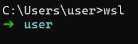
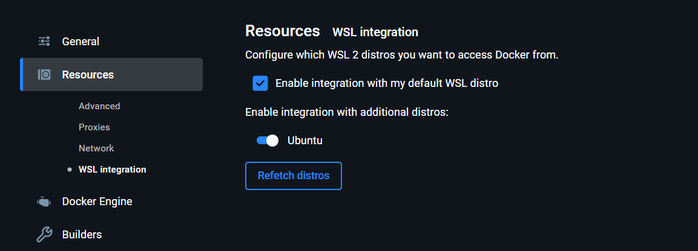
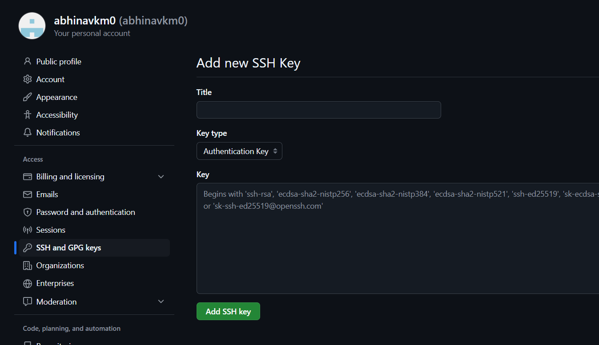

Setting up Development Environment in WSL
Complete guide to setting up a robust development environment using WSL, Docker, and Python tools for modern software development.
We will be working inside WSL for our development environment. This setup provides a robust Linux environment on Windows with all the tools we need for modern development.
Getting Started with WSL
First, install WSL:
wsl --installInstall the Ubuntu distro:
wsl --install -d UbuntuSet the default version to WSL2:
wsl --set-default-version 2WSL2 Environment
Now you can enter WSL to open a shell. This gives you access to a full Linux environment within Windows:

Docker Desktop Integration
Download and install Docker Desktop for containerized development.
Enable WSL2 integration in Docker Desktop settings:

SSH Key Configuration
Create an SSH key for secure Git operations:
ssh-keygen -t rsa -b 4096 -C "email@thoughtminds.io"Add the key to your SSH agent:
ssh-add ~/.ssh/file_nameCopy the contents of your .pub file to GitHub SSH Keys:

Python Environment with pyenv
Install pyenv for Python version management:
curl -fsSL https://pyenv.run | bashNote: Refer to the official pyenv documentation for detailed setup instructions.
For Zsh users, add these lines to your ~/.zshrc:
echo 'export PYENV_ROOT="$HOME/.pyenv"' >> ~/.zshrc
echo '[[ -d $PYENV_ROOT/bin ]] && export PATH="$PYENV_ROOT/bin:$PATH"' >> ~/.zshrc
echo 'eval "$(pyenv init - zsh)"' >> ~/.zshrcInstall a Python version:
pyenv install 3.10.5Troubleshooting: If you encounter compilation errors, install the required build dependencies:
sudo apt install -y software-properties-commonSet a global Python version:
pyenv global 3.10.5Package Management with pipenv
Install pipenv for virtual environment and dependency management:
python -m pip install pipenvInitialize a new project:
pipenv installInstall packages in your virtual environment:
pipenv install tqdmConclusion
This setup provides a powerful, isolated development environment that combines the best of Windows and Linux. With WSL2, Docker, and proper Python tooling, you'll have everything needed for modern software development.